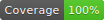

Node Pretty Logger - v1.0.1
Documentation Status: 
README.md
~
node-pretty-logger
Simple library extending
console.logfunctionality
A minimal Node.js terminal console.log extension library with formatting for better readability.
Usage
The main exported function useLogger has one parameter tag. Instantiating the encapsulated log functions will ensure that the console log will always mention in what context it is being run in - useful if using multiple loggers across modules.
const { info, success, warn, error } = useLogger('MainSrc')
const { info: ofInfo } = useLogger('OtherFunc')
const someData = {
attr1: 10,
attr2: 'Hi',
}
info('info')
success('success')
warn('warn')
error('error')
setLoggerConfig({ showTimeStamp: false })
info('Test', someData)
setLoggerConfig({ showTimeStamp: true })
ofInfo('Test', someData)
Outputs:

License
This library is released under MIT license, which means that you can reuse any part of code here for your convenience.
Copyright (C) 2025-present, Andrej Hučko
If you like this library, don't hesitate to give this repository a star! 😊
~
readme/CHANGELOG.md
~
Changelog
1.0.1: Update package.json entry1.0.0: Initial release0.0.0: Initialized Repository